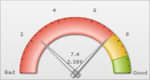
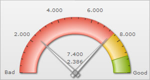
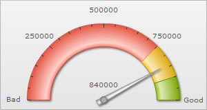
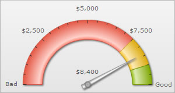

Number Formatting > Basics |
|
FusionWidgets v3 offers you a lot of options to format your numbers on the chart. From number prefixes and suffixes to controlling the decimal places to scaling your numbers based on a pre-defined scale, FusionWidgets lets you do it all. In this section, we'll see the number formatting properties supported by FusionWidgets and look into number scaling in the next section. We'll start with setting decimal precisions for the numbers on chart. |
|
| Controlling decimal precision | |
All the charts in FusionWidgets v3 support the attribute decimals. This single attribute lets you control the decimal precision of all the numbers on the chart. Using this attribute, you can globally set the number of decimal places of ALL numbers of the chart. By default, the decimal precision of all the numbers on the chart is set to 2. Using this attribute, you can re-define it. For e.g., if you have numbers on your chart as 2.386 and 7.4, by default the numbers would be rounded off to 2 decimal places and the numbers would become 2.39 and 7.4. To display all the 3 decimals of the first number, we would have to explicitly set <chart ... decimals='3' >. |
|
 |
|
No number formatting set - the numbers are automatically rounded off to 2 decimal places |
Number formatting set to show upto 3 decimal places - hence none of the numbers are rounded off |
| Note that even though decimals has been set to 3, FusionWidgets doesn't forcibly add 0s to 7.4 and convert it to 7.400 or to any of the other numbers on the chart. To forcibly add 0s to all these numbers, set <chart ... forceDecimals='1' ...> | |
 |
|
| Automatic number formatting | |
| FusionWidgets allows you to format your numbers by adding K, M and proper commas to the numbers. The commas are added to the numbers by default. But to convert all the big numbers on the chart to numbers made smaller by using K or M, set <chart ...formatNumberScale='1' ...>. | |
No number formatting applied - numbers shown the way they were entered |
Number formatting applied - numbers converted using K |
| If you don't want the numbers on the chart to be formatted using commas, you can set <chart .... formatNumber='0' ..> . But, setting formatNumber='0' wouldn't format any decimal places too (even if explicitly specified in XML). | |
 |
|
Commas removed from all the numbers |
|
| Setting custom thousand and decimal separator character | |
By default, FusionWidgets uses . (dot) as decimal separator and , (comma) as thousand separator character. However, you can customize this character depending on your requirements. To do so, use the decimalSeparator and thousandSeparator attribute. For example, let's set our thousands separator as dot and decimal separator as comma. To do so, you'll have to use the following XML: <chart ... decimalSeparator=',' thousandSeparator='.' > Shown below is the output. |
|
Using , as thousand separator and . as decimal separator (default) |
Using . as thousand separator and , as decimal separator |
| Adding number prefix and suffix | |
FusionWidgets allows you to add a prefix or suffix to all the numbers on the chart. You can use the following attributes of <chart> element to attain the same:
If you intend to use special characters for numberPrefix or numberSuffix, you'll need to URL Encode them when using dataXML method. For example, if you wish to have numberSuffix as % (like 30%), you'll need to specify it as under: In dataURL method, you can directly specify the character. |
|
 |
|
$ set as number prefix |
% set as number suffix |